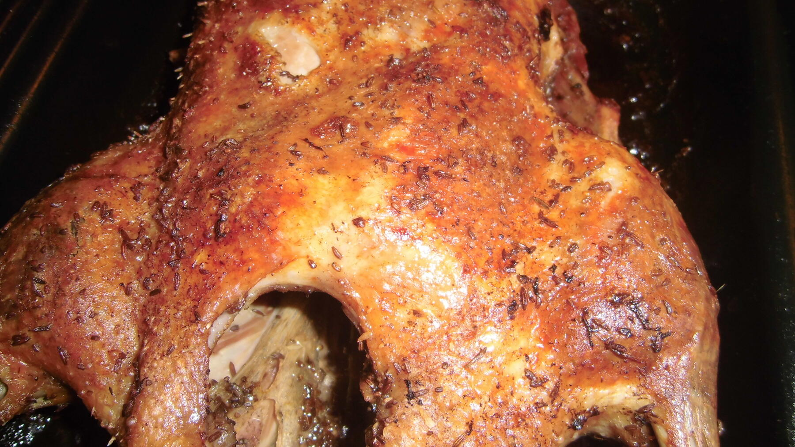

Zurück zur Übersicht
Gebratene Ente
Mit Äpfeln und Trockenpflaumen gefüllt, zugedeckt geschmort und zum Schluss knusprig gebraten.
- Zeit
- 3 Std.
- Schwierigkeit
- aufwendig
- Kategorie
- Klassiker
- Ernährung
- mit Fleisch
Zutaten
Portionen
- Ente, im Ganzen
- Äpfel
- Getrocknete Pflaumen
- Salz, Majoran
- Maggi Würze
- Speisestärke
Zubereitung
- Hals, Flügelenden und eventuell Innereien von der Ente entfernen. Ente unter fließendem Wasser abspülen und trocken tupfen.
- Innen mit Salz und Majoran einreiben.
- Mit ungeschälten, entkernten Äpfeln und getrockneten Pflaumen füllen und die Öffnung zunähen.
- Ente mit dem Rücken nach unten in einen Bräter legen und heißes Wasser angießen.
- Den Bräter mit Deckel in den auf 200–225 °C vorgeheizten Ofen schieben.
- Nach etwa 30 Minuten unterhalb der Flügel und Keulen mehrmals einstechen, damit das Fett besser austritt.
- Zugedeckt etwa 2 Stunden braten und die Ente ab und zu mit dem Bratensatz begießen.
- Ente mit Salzwasser und Maggi Würze bestreichen und ohne Deckel noch 15–30 Minuten weiterbraten, bis die Haut knusprig ist.
- Das Fett vom Bratensatz abschöpfen, die Soße mit Speisestärke binden und abschmecken.
- Füllung herausnehmen und die Ente portionieren.